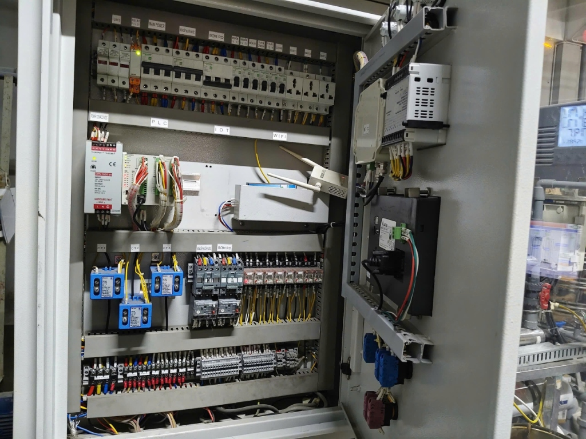
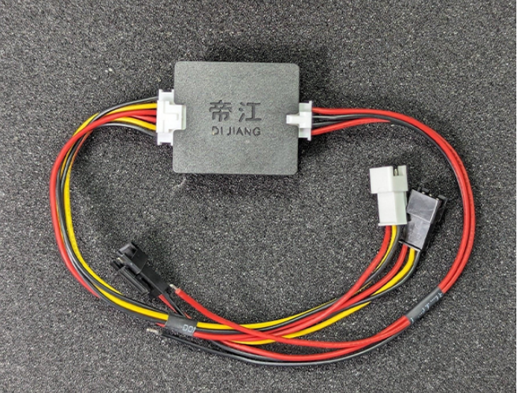
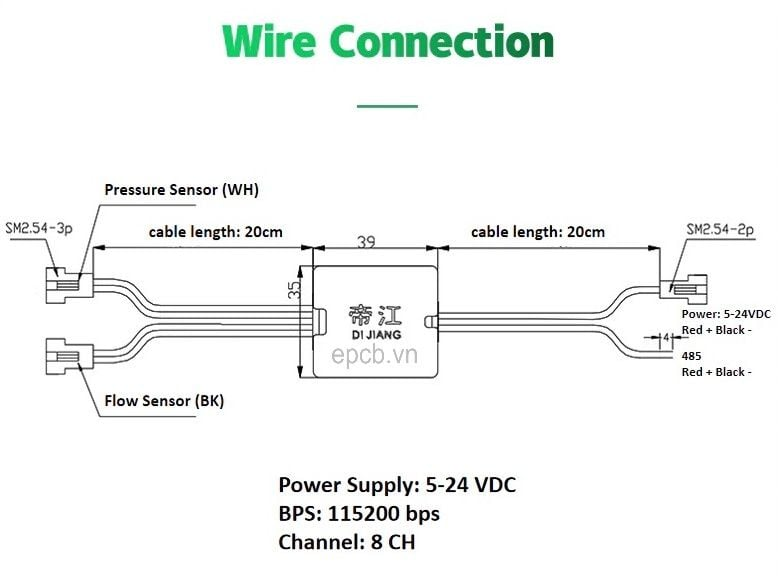

🔧 HƯỚNG DẪN THI CÔNG THAY THẾ BỘ CHUYỂN ĐỔI XUNG MODBUS
Thay thế PLC đọc xung bằng Bộ Chuyển Đổi Xung → Modbus RS485 (DI JIANG) — Kết nối về Navis
1Tổng Quan Dự Án
📌 Bối cảnh: Dự án cũ đã có cảm biến lưu lượng xung lắp sẵn trên đường ống. Tuy nhiên, PLC hiện tại không đọc được tín hiệu xung chính xác nữa. Giải pháp: thay thế bằng bộ chuyển đổi xung → Modbus RS485 (DI JIANG) để truyền dữ liệu về bộ Navis IoT Gateway trong tủ điện.
✅ Tóm tắt công việc:
- Dò và xác định 3 dây cảm biến lưu lượng xung hiện đang kéo về tủ điện
- Cúp CB, gỡ 3 dây ra khỏi PLC cũ
- Đấu 3 dây vào bộ chuyển đổi xung DI JIANG
- Cấp nguồn cho bộ DI JIANG (5-24VDC)
- Kéo dây Modbus RS485 từ bộ DI JIANG về bộ Navis trong tủ
1.1 Hình ảnh hiện trạng & thiết bị
1 Cảm biến lưu lượng xung — đã lắp trên đường ống

2 Tủ điện hiện tại — cần dò 3 dây cảm biến trong tủ

3 Bộ chuyển đổi xung → Modbus DI JIANG (thiết bị mới)

4 Sơ đồ đấu dây bộ chuyển đổi DI JIANG
2Dụng Cụ & Vật Tư Cần Chuẩn Bị
⚠️ QUAN TRỌNG: Chuẩn bị đầy đủ trước khi ra dự án. Thiếu dụng cụ sẽ ảnh hưởng tiến độ thi công!
🔌 Dụng cụ đo
- Đồng hồ vạn năng (VOM)
- Bút thử điện
- Ampe kìm (nếu có)
🔧 Dụng cụ cơ khí
- Tua vít dẹt (2mm, 4mm)
- Tua vít bake (+, -)
- Kìm cắt, kìm tuốt dây
- Kìm bấm đầu cos
📦 Vật tư tiêu hao
- Dây điện 0.5~1.0mm²
- Dây Modbus RS485 (xoắn đôi)
- Đầu cos pin / cos Y
- Băng keo điện
- Dây rút (cable ties)
- Ống gen co nhiệt
2.1 Thiết bị chính
💧 Cảm Biến Lưu Lượng Xung (Có sẵn)
Loại: Hall Effect — NPN
Nguồn: 5-24VDC
Dây: Đỏ (+) Đen (GND) Vàng (Signal)
Trạng thái: Đã lắp trên ống
🔄 Bộ Chuyển Đổi Xung Modbus DI JIANG (Mới)
Hãng: DI JIANG (epcb.vn)
Nguồn: 5-24 VDC
Giao tiếp: RS485 Modbus
Baudrate: 115200 bps
Kênh: 8 CH
📡 Bộ Navis IoT Gateway (Có sẵn)
Model: NavisMod NM03
Giao tiếp: Modbus RS485
Kết nối: WiFi / 4G → Cloud
Trạng thái: Đã lắp trong tủ
3Thông Số Kỹ Thuật — Bộ Chuyển Đổi DI JIANG
Bộ chuyển đổi xung Modbus DI JIANG
Sơ đồ đấu dây (Wire Connection)
| Thông số | Giá trị |
|---|---|
| Nguồn cấp (Power Supply) | 5 — 24 VDC |
| Giao thức truyền thông | Modbus RTU qua RS485 |
| Tốc độ truyền (Baudrate) | 115200 bps |
| Số kênh (Channel) | 8 CH |
| Kích thước | 39mm × 35mm × 14mm |
3.1 Sơ đồ đầu dây (Wire Connection)
| Đầu connector | Chức năng | Màu dây | Ghi chú |
|---|---|---|---|
| BÊN TRÁI — NGÕ VÀO CẢM BIẾN (SM2.54-3p) | |||
| Pressure Sensor (WH) | Ngõ vào cảm biến áp suất | Trắng (WH) | Không sử dụng trong dự án này |
| Flow Sensor (BK) | Ngõ vào cảm biến lưu lượng | Đen (BK) | → Đấu dây tín hiệu xung vào đây |
| BÊN PHẢI — NGUỒN + RS485 (SM2.54-2p) | |||
| Power | Nguồn cấp 5-24VDC | Đỏ (+) + Đen (−) | Lấy nguồn 24VDC từ tủ điện |
| 485 (RS485) | Truyền thông Modbus | Đỏ (A+) + Đen (B−) | → Kéo về bộ Navis |
3.2 Sơ đồ đấu dây tổng quan
4An Toàn Điện — CỰC KỲ QUAN TRỌNG
⚡ CẢNH BÁO NGUY HIỂM — ĐỌC KỸ TRƯỚC KHI THAO TÁC
Khi cúp CB cảm biến để thao tác, dây điện INPUT (nguồn vào tủ) VẪN CÒN ĐIỆN!
Phải luôn né tránh dây điện input trong quá trình làm việc bên trong tủ điện.
Sử dụng bút thử điện kiểm tra trước khi chạm vào bất kỳ dây nào!
Phải luôn né tránh dây điện input trong quá trình làm việc bên trong tủ điện.
Sử dụng bút thử điện kiểm tra trước khi chạm vào bất kỳ dây nào!
1
Xác định CB cảm biến lưu lượng — Tìm đúng CB đang cấp nguồn cho mạch cảm biến xung. Xem kỹ label/nhãn trên CB.
2
CÚP CB — Ngắt CB liên quan, đợi ít nhất 10 giây trước khi thao tác.
3
Dùng bút thử điện — Kiểm tra tất cả dây định thao tác. Chắc chắn KHÔNG CÒN ĐIỆN mới được chạm.
4
Né dây input — Dây điện nguồn input (trước CB tổng) LUÔN CÓ ĐIỆN. Tuyệt đối không chạm vào!
5
Làm việc bằng tay khô — Đảm bảo tay khô, đứng trên nền khô, không đeo nhẫn/đồ kim loại.
⚠️ LƯU Ý THÊM: Trong tủ điện có nhiều loại dây chạy song song. Phải dò kỹ từng dây bằng đồng hồ VOM để xác định đúng 3 dây cảm biến lưu lượng trước khi gỡ. Sai dây có thể gây hư thiết bị hoặc nguy hiểm.
5Quy Trình Thi Công Chi Tiết
1
Mở tủ điện, quan sát tổng thể — Xác định vị trí:
- CB cấp nguồn cho mạch cảm biến lưu lượng
- 3 dây cảm biến (Đỏ, Đen, Vàng) đang kéo về đâu trong tủ
- Vị trí bộ Navis IoT Gateway
- Nguồn 24VDC có sẵn trong tủ
2
Dò 3 dây cảm biến lưu lượng xung — Dùng đồng hồ VOM chế độ thông mạch (continuity) để xác nhận:
- Dây Đỏ = VCC (+) — nguồn dương cảm biến
- Dây Đen = GND (−) — nguồn âm cảm biến
- Dây Vàng = Signal — tín hiệu xung ra
3
Xác định chỗ 3 dây đang đấu vào PLC cũ — Ghi nhận chính xác vị trí terminal/chân PLC mà 3 dây này đang gắn vào, chụp ảnh lại trước khi gỡ.
📸 Mẹo: Chụp ảnh toàn bộ kết nối hiện tại trước khi gỡ bất kỳ dây nào. Phòng trường hợp cần khôi phục lại.
⚠️ NHẮC LẠI: Cúp CB xong, dùng bút thử điện kiểm tra. Dây INPUT vẫn còn điện — NÉ!
4
CÚP CB — Ngắt CB cấp nguồn mạch cảm biến. Đợi 10 giây. Kiểm tra bằng bút thử điện.
5
Gỡ 3 dây cảm biến khỏi PLC cũ — Tháo cẩn thận từng dây, đánh dấu lại nếu cần (dán nhãn hoặc viết băng keo).
6
Đấu 3 dây cảm biến vào bộ chuyển đổi DI JIANG — Theo sơ đồ:
| Dây cảm biến | Màu | Đấu vào DI JIANG | Connector |
|---|---|---|---|
| VCC (+) | Đỏ | Nguồn cấp cho cảm biến — lấy từ nguồn 24VDC trong tủ | — |
| GND (−) | Đen | GND chung — nối chung mass nguồn 24VDC | — |
| Signal (Xung) | Vàng | Flow Sensor (BK) — Ngõ vào xung lưu lượng | SM2.54-3p (Trái) |
7
Cấp nguồn cho bộ DI JIANG — Lấy nguồn 24VDC có sẵn trong tủ:
| Chân DI JIANG | Đấu vào |
|---|---|
| Power Đỏ (+) | Nguồn 24VDC (+) trong tủ |
| Power Đen (−) | Nguồn 24VDC (−) / GND trong tủ |
8
Kéo dây Modbus RS485 từ DI JIANG về bộ Navis:
| Chân DI JIANG (RS485) | Màu | Đấu vào bộ Navis |
|---|---|---|
| 485 A+ | Đỏ | RS485 A+ trên Navis |
| 485 B− | Đen | RS485 B− trên Navis |
💡 Lưu ý RS485: Dây RS485 nên dùng dây xoắn đôi có shield. Nối shield vào GND một đầu (phía Navis). Đảm bảo A+ nối A+, B− nối B−.
9
Kiểm tra lại toàn bộ kết nối — Rà soát từng mối nối, đảm bảo chắc chắn, không chập, không lỏng.
10
Đóng CB lại — Bật CB cấp nguồn. Quan sát:
- Đèn LED trên bộ DI JIANG sáng = nguồn OK
- Đèn LED trên Navis hoạt động bình thường
- Không có mùi khét, không có tiếng kêu bất thường
11
Test lưu lượng — Cho nước chảy qua cảm biến (hoặc thổi gió) → Kiểm tra trên Navis xem có nhận được dữ liệu Modbus không.
12
Thu dọn, bó gọn dây — Dùng dây rút buộc gọn dây, dán nhãn, đóng tủ.
6Cấu Hình Modbus Trên Navis
📡 Thông số kết nối Modbus RTU:
| Thông số | Giá trị | Ghi chú |
|---|---|---|
| Baudrate | 115200 | Tốc độ mặc định của DI JIANG |
| Data Bits | 8 | — |
| Parity | None | Kiểm tra lại tài liệu DI JIANG |
| Stop Bits | 1 | — |
| Slave Address | 1 (mặc định) | Có thể thay đổi qua cấu hình |
⚠️ LƯU Ý: Baudrate 115200 bps khá cao. Nếu Navis không hỗ trợ, cần cấu hình lại DI JIANG về 9600 bps (kiểm tra tài liệu DI JIANG để thay đổi baudrate qua lệnh Modbus).
☁️ CẤU HÌNH TỪ XA: Sau khi hoàn tất đấu dây phần cứng, liên lạc kỹ thuật IoT để cấu hình Modbus trên Navis và cập nhật dashboard:
👤 Trí Nguyễn — Kỹ thuật IoT
📞 0387 226 446
Nội dung cần hỗ trợ: Cấu hình thanh ghi Modbus, map địa chỉ slave, thêm biểu đồ lưu lượng trên dashboard, cài cảnh báo ngưỡng.
7Xử Lý Sự Cố
| Hiện tượng | Nguyên nhân có thể | Cách khắc phục |
|---|---|---|
| LED DI JIANG không sáng | Chưa cấp nguồn / sai cực | Kiểm tra lại nguồn 24VDC. Đảm bảo (+) vào Đỏ, (−) vào Đen |
| Navis không nhận dữ liệu Modbus | Sai dây A+/B−, sai baudrate, sai slave address | Đảo dây A+ ↔ B−. Kiểm tra baudrate = 115200. Kiểm tra slave address |
| Giá trị lưu lượng = 0 | Dây signal chưa đấu vào đúng ngõ Flow Sensor | Kiểm tra dây Vàng (Signal) đã vào connector Flow Sensor (BK) chưa |
| Giá trị nhảy lung tung | Nhiễu, dây RS485 chạy song song dây động lực | Dùng dây xoắn đôi có shield. Tách xa dây động lực. Nối shield vào GND |
| DI JIANG nóng bất thường | Quá áp hoặc ngắn mạch | Ngắt nguồn ngay! Kiểm tra lại sơ đồ đấu dây |
8Checklist Hoàn Thành Công Việc
🔧 Trước khi đi dự án
- Đồng hồ VOM (pin đầy)
- Bút thử điện
- Tua vít dẹt + bake
- Kìm cắt, kìm tuốt, kìm bấm cos
- Dây điện 0.5~1.0mm²
- Dây Modbus RS485 (đủ dài)
- Đầu cos pin, băng keo, dây rút
- Bộ chuyển đổi DI JIANG (mới)
- Điện thoại (chụp ảnh)
✅ Sau khi thi công xong
- Đã chụp ảnh trước khi gỡ dây
- Đã dò đúng 3 dây cảm biến
- Đã cúp CB trước khi thao tác
- 3 dây đã gỡ khỏi PLC cũ
- Signal (Vàng) → Flow Sensor (BK)
- Nguồn 24VDC → Power DI JIANG
- RS485 A+/B− → Navis A+/B−
- LED DI JIANG sáng khi đóng điện
- Test có nước → Navis nhận dữ liệu
- Dây bó gọn, dán nhãn
- Đã liên lạc kỹ thuật IoT cấu hình
- Chụp ảnh sau khi hoàn thành